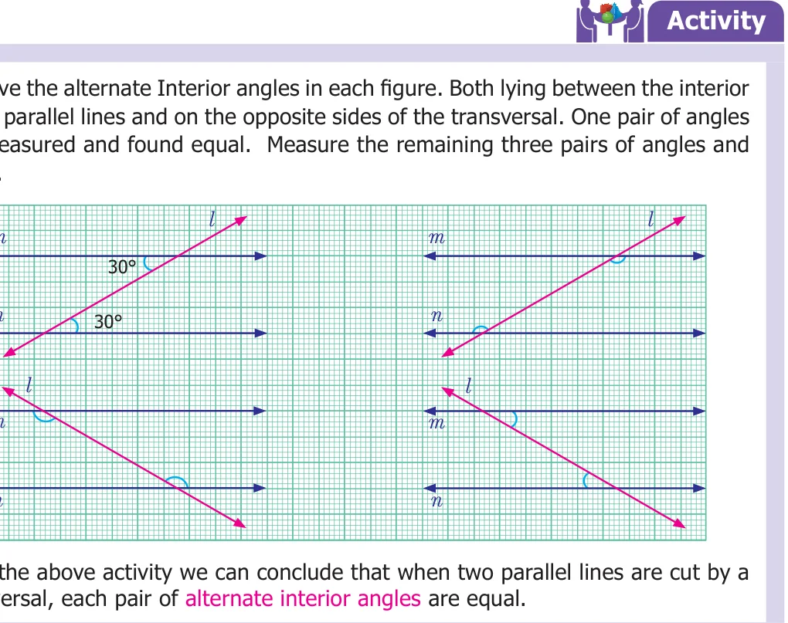
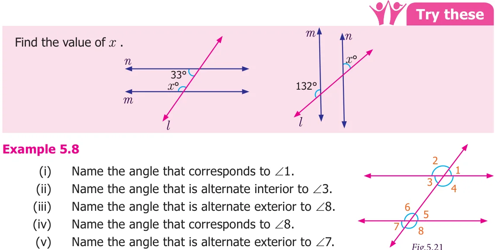
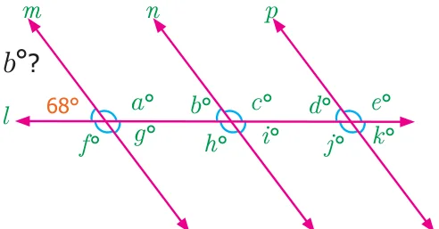
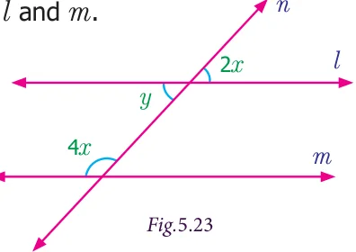
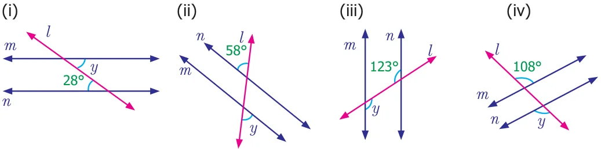

Observe the Fig.5.13. Here m and n are any two non-parallel lines and l is another line intersecting them at A and B respectively. We call such intersecting line (l) as transversal. Therefore, a transversal is a line that intersects two lines at distinct points. We can extend this idea to any number of lines.
Now observe the following Fig.5.14. Check whether the line l is transversal to other line in both the cases (i) and (ii).


In figure (i) the line l is not a transversal to the lines m and n, but it is a transversal to the pair of lines m and o , n and o. In figure (ii) l does not intersect the lines m and n at distinct points. So, it is not a transversal.
Try these
- 1.Draw as many possible transversals in the given figures.
- 2.Draw a line which is not the transversal to the above figures.
- 3.How many transversals can you draw for the following two lines?
5.3.1. Angles formed by a transversal
If a transversal meet two lines, eight angles are formed at the points of intersection as shown in the Fig.5.15. It is clear that the pairs of angles \(\angle 1\), \(\angle 2\), ; \(\angle 3\), \(\angle 4\), ; \(\angle 5\), \(\angle 6\) and \(\angle 7\), \(\angle 8\) are linear pairs. Can you find more linear pairs of angles? Besides, the pairs \(\angle 1\), \(\angle 3\) ; \(\angle 2\), \(\angle 4\) ; \(\angle 5\), \(\angle 7\) and \(\angle 6\), \(\angle 8\) are Fig.5.15 vertically opposite angles. We can further classify the angles shown in the Fig. 5.15 into different categories as follows.

Corresponding angles

Observe that the pair of angles \(\angle 1\) and \(\angle 5\) that are marked at the right side of the transversal l. In that \(\angle 1\) lies above the line m and \(\angle 5\) lies above the line n. Also observe the pair of angles \(\angle 2\) and \(\angle 6\) that are marked on the left of the transversal l. In that \(\angle 2\) lies above m and \(\angle 6\) lies above n. Fig.5.16 In the same way observe the pair of angles \(\angle 3\) and \(\angle 7\) that are marked on left of transversal l. In that \(\angle 3\) lies below m and \(\angle 7\) lies below n. Observe the pair of angles \(\angle 4\) and \(\angle 8\) that are marked on the right of transversal l. In that \(\angle 4\) lies below m and \(\angle 8\) lies below n. So all these pairs of angles have different vertices, lie on the same side (left or right) of the transversal(l), lie above or below the lines m and n. Such pairs are called corresponding angles.


Alternate Interior angles
Each of pair of angles named \(\angle 3\) and \(\angle 5\), \(\angle 4\) and \(\angle 6\) are marked on the opposite side of the transversal l and are lying between lines m and n are called alternate interior angles.
Alternate Exterior angles

Each pair of angles named \(\angle 1\) and \(\angle 7\), \(\angle 2\) and \(\angle 8\) are marked on the opposite side of the transversal l and are lying outside of the lines m and n are called alternate exterior angles.
Now let us observe some more pairs of angles.

Each pair of angles named \(\angle 3\) and \(\angle 6\), \(\angle 4\) and \(\angle 5\) are marked on the same side of transversal l and are lying between the lines m and n. These angles are lying on the interior of the lines m and n as well as the same side of the transversal l.
Each pair of angles named \(\angle 1\) and \(\angle 8\), \(\angle 2\) and \(\angle 7\) are marked on the same side of transversal l and are lying outside of the lines m and n. These angles are lying on the exterior of the lines m and n as well as the same side of the transversal l. How can we call such angles?
We call them as co-interior and co-exterior angles.
In Architecture, corresponding angles are used to assure symmetry and balance when designing the structure. Alternate exterior angles are used to ensure symmetry in floor plans. Alternate interior Angles are used to ensure that two beams are parallel and do not let the structure bend or deform in any form. Interior angles on the same side of the transversal are used to determine if two beams are parallel and will not result in any distractions to the overall design. Exterior angles on the same side of the transversal are used to confirm that the walls are indeed straight and not at a different angle.
5.3.2 Angles formed by a transversal with Parallel lines
We saw different types of angles formed by a transversal while intersecting two given lines. Now let us observe some interesting facts on the angles formed by a transversal with the parallel lines from the following activities.

Try these
- 1.Four real life examples for transversal of parallel lines are given below.
Give four more examples for transversal of parallel lines seen in your surroundings. l
- 2.Find the value of x .
\(m 125 ^{\circ} l m n x ^{\circ} x ^{\circ} n x ^{\circ} 138 ^{\circ} 48 ^{\circ}\)

check.



Name the angle that is alternate interior to \(\angle 6\).
Solution
The angle that corresponds to \(\angle 1\) is \(\angle 5\) The angle that is alternate interior to \(\angle 3\) is \(\angle 5\) The angle that is alternate exterior to \(\angle 8\) is \(\angle 2\) The angle that corresponds to 8 is \(\angle 4\) The angle that is alternate exterior to \(\angle \angle 7\) is \(\angle 1\) The angle that is alternate interior to \(\angle 6\) is \(\angle 4\)

Example 5.9
- (i)Which angles are corresponding angles to b
- (ii)What is the measure of \(b ^{\circ}\) ?
- (iii)Which angles have the measure \(68 ^{\circ}\) ?
- (iv)Which angles have the measure \(112 ^{\circ}\) ?
Solution
- (i)The corresponding angles to \(b ^{\circ}\) are \(d ^{\circ}\) and \(68 ^{\circ}\) . Fig.5.22
- (ii)The measure of \(b ^{\circ}\) is \(68 ^{\circ}\) (Because \(b ^{\circ}\) corresponds to \(68 ^{\circ}\) )
- (iii)The angles having measure \(68 ^{\circ}\) are \(b ^{\circ}\) , \(d ^{\circ}\) , \(g ^{\circ}\) , \(i ^{\circ}\) and \(k ^{\circ}\) .
- (iv)The angles having measure \(112 ^{\circ}\) are \(a ^{\circ}\) , \(c ^{\circ}\) , \(e ^{\circ}\) , \(f ^{\circ}\) , \(h ^{\circ}\) and \(j ^{\circ}\) .
Example 5.10 If l is parallel to m, find the measure of x and y in the figure. Solution Given l is parallel to m and n is transversal to We get, \(y = 2x\) [Vertically opposite angles are equal] \(y + 4x = 180 ^{\circ}\) [sum of interior angles that lie on the same side of the transversal]

\(2x + 4x = 180 ^{\circ}\) [since \(y = 2x]\)
\(6x = 180 ^{\circ}\)
Dividing by 6 on both sides
\(= 180 ^{\circ}\) gives, \(x = 30 ^{\circ}\) . \(\frac{x}{6} 6\) Now, \(y = 2(30 ^{\circ}\) ) \(= 60 ^{\circ}\) .

- 1.From the figures name the marked pair of angles.


- 2.Find the measure of angle x in each of the following figures.

- 3.Find the measure of angle y in each of the following figures.
